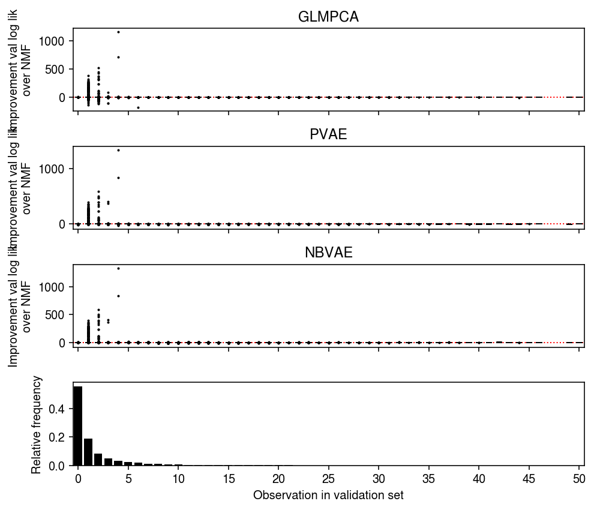
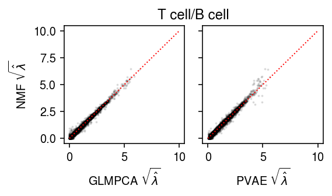

Comparison of fitted values
Table of Contents
Introduction
We previously found that NMF, GLM-PCA, and PVAE all had similar performance on a binomial thinning benchmark. A clearer way to demonstrate this is to plot the fitted values against each other.
Setup
import numpy as np import pandas as pd import scipy.stats as st import scmodes import torch
%matplotlib inline %config InlineBackend.figure_formats = set(['retina'])
import matplotlib.pyplot as plt plt.rcParams['figure.facecolor'] = 'w' plt.rcParams['font.family'] = 'Nimbus Sans'
Results
Datasets
Follow the data processing we used for masked value estimation.
def _read_10x(k, min_detect=0.01, n_cells=1000, seed=1): return scmodes.dataset.read_10x(f'/project2/mstephens/aksarkar/projects/singlecell-ideas/data/10xgenomics/{k}/filtered_matrices_mex/hg19/', min_detect=0.01, return_df=True).sample(n=n_cells, axis=0, random_state=seed) def _mix_10x(k1, k2, min_detect=0.01, n_cells=1000, seed=1): x1 = scmodes.dataset.read_10x(f'/project2/mstephens/aksarkar/projects/singlecell-ideas/data/10xgenomics/{k1}/filtered_matrices_mex/hg19/', return_df=True, min_detect=0) x2 = scmodes.dataset.read_10x(f'/project2/mstephens/aksarkar/projects/singlecell-ideas/data/10xgenomics/{k2}/filtered_matrices_mex/hg19/', return_df=True, min_detect=0) return scmodes.dataset.synthetic_mix(x1, x2, min_detect=min_detect)[0].sample(n=n_cells, axis=0, random_state=seed) def _cd8_cd19_mix(**kwargs): return _mix_10x('cytotoxic_t', 'b_cells', **kwargs) def _cyto_naive_mix(**kwargs): return _mix_10x('cytotoxic_t', 'naive_t', **kwargs) data = { 'cytotoxic_t': lambda: _read_10x('cytotoxic_t'), 'b_cells': lambda: _read_10x('b_cells'), 'ipsc': lambda: scmodes.dataset.ipsc('/project2/mstephens/aksarkar/projects/singlecell-qtl/data/', return_df=True).sample(n=1000, axis=0, random_state=1), 'cytotoxic_t-b_cells': _cd8_cd19_mix, 'cytotoxic_t-naive_t': _cyto_naive_mix, 'pbmcs_68k': lambda: _read_10x('fresh_68k_pbmc_donor_a'), }
Report the data dimensions.
pd.DataFrame([data[k]().shape for k in data], columns=['num_cells', 'num_genes'], index=data.keys())
num_cells num_genes cytotoxic_t 1000 6530 b_cells 1000 6417 ipsc 1000 9957 cytotoxic_t-b_cells 1000 6647 cytotoxic_t-naive_t 1000 6246 pbmcs_68k 1000 6502
B cells
x = data['b_cells']()
l, f, _ = scmodes.lra.nmf(x.values, rank=2, verbose=True) lam0 = l @ f.T
l, f, _ = scmodes.lra.glmpca(x.values, rank=2, verbose=True) lam1 = np.exp(l @ f.T)
xt = torch.tensor(x.values, dtype=torch.float) m = scmodes.lra.PVAE(input_dim=x.shape[1], latent_dim=5).fit(xt, lr=1e-3, max_epochs=2000, verbose=True) lam2 = m.denoise(xt)
plt.clf() fig, ax = plt.subplots(1, 2, sharey=True) fig.set_size_inches(4, 2.5) ax[0].scatter(np.sqrt(lam1.ravel()[::50]), np.sqrt(lam0.ravel()[::50]), s=1, c='k', alpha=0.1) ax[0].plot([0, 11], [0, 11], lw=1, ls=':', c='r') ax[0].set_xlabel(r'GLMPCA $\sqrt{\hat\lambda}$') ax[0].set_ylabel(r'NMF $\sqrt{\hat\lambda}$') ax[1].scatter(np.sqrt(lam2.ravel()[::50]), np.sqrt(lam0.ravel()[::50]), s=1, c='k', alpha=0.1) ax[1].plot([0, 11], [0, 11], lw=1, ls=':', c='r') ax[1].set_xlabel(r'PVAE $\sqrt{\hat\lambda}$') a = fig.add_subplot(111, frame_on=False, xticks=[], yticks=[]) a.set_title('B cell') fig.tight_layout()

Look at log likelihood differences in binomial thinning.
train, test = scmodes.benchmark.train_test_split(x) l, f, _ = scmodes.lra.nmf(train.values, rank=2, verbose=True) lam0 = (l @ f.T) * test.values.sum(axis=1, keepdims=True) / train.values.sum(axis=1, keepdims=True) llik0 = st.poisson(mu=lam0).logpmf(test) l, f, _ = scmodes.lra.glmpca(train.values, rank=2, atol=1, max_iters=500, verbose=True) lam1 = np.exp(l @ f.T) * test.values.sum(axis=1, keepdims=True) / train.values.sum(axis=1, keepdims=True) llik1 = st.poisson(mu=lam1).logpmf(test) xt = torch.tensor(x.values, dtype=torch.float) m = scmodes.lra.PVAE(input_dim=x.shape[1], latent_dim=5).fit(xt, lr=1e-3, max_epochs=2000, verbose=True) lam2 = m.denoise(xt) * test.values.sum(axis=1, keepdims=True) / train.values.sum(axis=1, keepdims=True) llik2 = st.poisson(mu=lam2).logpmf(test)
plt.clf() fig, ax = plt.subplots(3, 1, sharex=True) fig.set_size_inches(7, 6) grid = np.arange(test.values.max()) for i in grid: ax[0].boxplot((llik0 - llik1)[test.values == i].ravel(), positions=[i], widths=[0.5], medianprops={'color': 'k'}, flierprops={'marker': '.', 'markersize': 2}) ax[0].axhline(y=0, ls=':', lw=1, c='r') ax[0].set_ylabel('Diff log lik from NMF') ax[0].set_title('GLMPCA') for i in grid: ax[1].boxplot((llik0 - llik2)[test.values == i].ravel(), positions=[i], widths=[0.5], medianprops={'color': 'k'}, flierprops={'marker': '.', 'markersize': 2}) ax[1].axhline(y=0, ls=':', lw=1, c='r') ax[1].set_ylabel('Diff log lik from NMF') ax[1].set_title('PVAE') h, e = np.histogram(test.values.ravel(), bins=np.arange(test.values.max() + 1), density=True) ax[2].bar(e[:-1], h, color='k') ax[2].set_ylabel('Relative frequency') ax[2].set_xticks(grid[::4]) ax[2].set_xticklabels(grid[::4].astype(int)) ax[2].set_xlim(-.5, grid.max() - .5) ax[2].set_xlabel('Observation in validation set') fig.tight_layout()

T cells
x = data['cytotoxic_t']()
l, f, _ = scmodes.lra.nmf(x.values, rank=3, verbose=True) lam0 = l @ f.T
l, f, _ = scmodes.lra.glmpca(x.values, rank=3, atol=.1, max_iters=500, verbose=True) lam1 = np.exp(l @ f.T)
xt = torch.tensor(x.values, dtype=torch.float) m = scmodes.lra.PVAE(input_dim=x.shape[1], latent_dim=5).fit(xt, lr=1e-3, max_epochs=2000, verbose=True) lam2 = m.denoise(xt)
plt.clf() fig, ax = plt.subplots(1, 2, sharey=True) fig.set_size_inches(4, 2.5) ax[0].scatter(np.sqrt(lam1.ravel()[::50]), np.sqrt(lam0.ravel()[::50]), s=1, c='k', alpha=0.1) ax[0].plot([0, 8], [0, 8], lw=1, ls=':', c='r') ax[0].set_xticks([0, 4, 8]) ax[0].set_yticks([0, 4, 8]) ax[0].set_xlabel(r'GLMPCA $\sqrt{\hat\lambda}$') ax[0].set_ylabel(r'NMF $\sqrt{\hat\lambda}$') ax[1].scatter(np.sqrt(lam2.ravel()[::50]), np.sqrt(lam0.ravel()[::50]), s=1, c='k', alpha=0.1) ax[1].plot([0, 8], [0, 8], lw=1, ls=':', c='r') ax[1].set_xticks([0, 4, 8]) ax[1].set_yticks([0, 4, 8]) ax[1].set_xlabel(r'PVAE $\sqrt{\hat\lambda}$') a = fig.add_subplot(111, frame_on=False, xticks=[], yticks=[]) a.set_title('T cell') fig.tight_layout()
iPSCs
x = data['ipsc']()
l, f, _ = scmodes.lra.nmf(x.values, rank=2, verbose=True) lam0 = l @ f.T
l, f, _ = scmodes.lra.glmpca(x.values, rank=2, atol=.1, max_iters=500, verbose=True) lam1 = np.exp(l @ f.T)
xt = torch.tensor(x.values, dtype=torch.float) m = scmodes.lra.PVAE(input_dim=x.shape[1], latent_dim=5).fit(xt, lr=1e-3, max_epochs=2000, verbose=True) lam2 = m.denoise(xt)
plt.clf() fig, ax = plt.subplots(1, 2, sharey=True) fig.set_size_inches(4, 2.5) ax[0].scatter(np.sqrt(lam1.ravel()[::50]), np.sqrt(lam0.ravel()[::50]), s=1, c='k', alpha=0.1) ax[0].plot([0, 30], [0, 30], lw=1, ls=':', c='r') ax[0].set_xlabel(r'GLMPCA $\sqrt{\hat\lambda}$') ax[0].set_ylabel(r'NMF $\sqrt{\hat\lambda}$') ax[1].scatter(np.sqrt(lam2.ravel()[::50]), np.sqrt(lam0.ravel()[::50]), s=1, c='k', alpha=0.1) ax[1].plot([0, 30], [0, 30], lw=1, ls=':', c='r') ax[1].set_xlabel(r'PVAE $\sqrt{\hat\lambda}$') a = fig.add_subplot(111, frame_on=False, xticks=[], yticks=[]) a.set_title('iPSC') fig.tight_layout()
T cell/B cell
x = data['cytotoxic_t-b_cells']()
l, f, _ = scmodes.lra.nmf(x.values, rank=3, verbose=True) lam0 = l @ f.T
l, f, _ = scmodes.lra.glmpca(x.values, rank=3, atol=.1, max_iters=500, verbose=True) lam1 = np.exp(l @ f.T) np.save('/scratch/midway2/aksarkar/modes/fitted-values/cytotoxic_t-b_cells-wglmpca', lam1)
0 - 805adc4a-e03c-49cc-84a8-194be1441dd2
xt = torch.tensor(x.values, dtype=torch.float) m = scmodes.lra.PVAE(input_dim=x.shape[1], latent_dim=5).fit(xt, lr=1e-3, max_epochs=2000, verbose=True) lam2 = m.denoise(xt) np.save('/scratch/midway2/aksarkar/modes/fitted-values/cytotoxic_t-b_cells-pvae', lam2)
plt.clf() fig, ax = plt.subplots(1, 2, sharey=True) fig.set_size_inches(4, 2.5) ax[0].scatter(np.sqrt(lam1.ravel()[::50]), np.sqrt(lam0.ravel()[::50]), s=1, c='k', alpha=0.1) ax[0].plot([0, 10], [0, 10], lw=1, ls=':', c='r') ax[0].set_xlabel(r'GLMPCA $\sqrt{\hat\lambda}$') ax[0].set_ylabel(r'NMF $\sqrt{\hat\lambda}$') ax[1].scatter(np.sqrt(lam2.ravel()[::50]), np.sqrt(lam0.ravel()[::50]), s=1, c='k', alpha=0.1) ax[1].plot([0, 10], [0, 10], lw=1, ls=':', c='r') ax[1].set_xlabel(r'PVAE $\sqrt{\hat\lambda}$') a = fig.add_subplot(111, frame_on=False, xticks=[], yticks=[]) a.set_title('T cell/B cell') fig.tight_layout()
